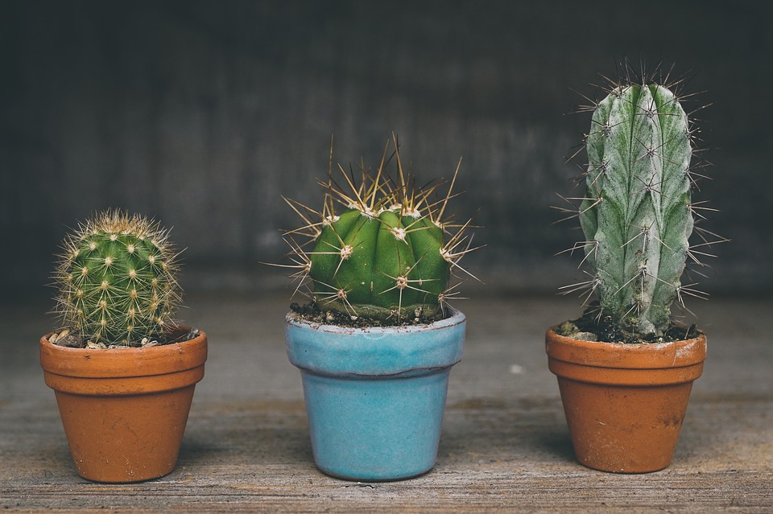

Cactus y Suculentas
¿Por qué regalar un cactus o una suculenta?


- Anteriormente se decía que los cactus traían mala suerte. En la actualidad la creencia es diferente. Hoy en día se relaciona a la buena suerte ya que quien te regala un cactus, te regala una planta que, a pesar de la sequía, del abandono y los tiempos difíciles, se toma el trabajo de volver a nacer y casi siempre, te devuelve una flor.
- Los cactus también están relacionados con el éxito según el Feng Shui. También con el reconocimiento laboral, por eso en una oficina siempre es bienvenido un cactus.
- Un cactus es una excelente opción para hacer un jardín vertical. ¿Por qué? Porque tiene muy poca necesidad de riego, lo cual permite ahorrar agua y además son plantas muy fáciles de cuidar ya que no es necesario tener constante cuidado.
- Las suculentas son plantas que tampoco tienen mucha necesidad de agua, ya que pueden retener mucha agua en su interior. Es importante controlar el riego y evitar que estén expuestas al sol fuerte ya que necesitan temperaturas bajas.
- Según el Feng Shui, las suculentas son plantas muy especiales ya que se considera que son protectoras y que favorecen la armonía.
- Existen varios tipos de suculentas:
Echeveria: Son las más conocidas dentro de las suculentas.
Argyroderma: Es similar a un huevo partido. Las hojas tienen color plateado y cuando florecen, en invierno, tienen flores rojas y rosas.
Lithops o plantas piedra: Si no están en flor tienen forma de piedra. Cuando florecen, sus flores son blancas y amarillas.
Sempervivum: Es una suculenta con mucha capacidad de resistencia y multiplicación
Cactáceas: ¡¡Son los famosos cactus!!
Aloe: Es la más conocida por sus propiedades hidratantes, calmantes y de cicatrización.